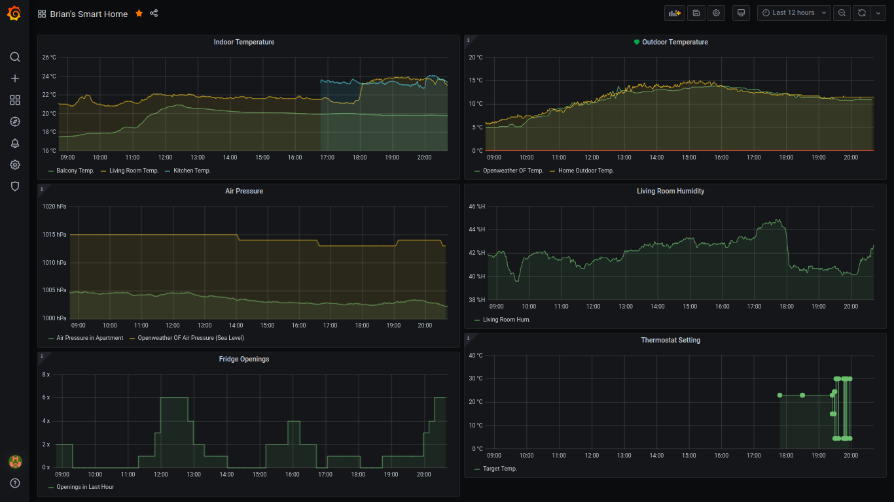

Power-Charge Your Node-Red Data with Grafana and InfluxDB
You should be saving to InfluxDB
You’re saving sensor readings from Node-Red to text files? There is a more efficient and simple way to do it. InfluxDB is an open-source database made especially for time-series data like sensor readings. And the great thing is, you can write to it directly from a Node-Red node.

It’s as easy as cding into your .node-red directory and installing the InfluxDB Node-Red package:
npm install node-red-contrib-influxdb
Once InfluxDB nodes appear in your node selector panel, just link them up to your desired output and configure.

Of course, you’ll need to have installed InfluxDB on your server first! To do that, check out this great tutorial by Simon Hearne. It’s a nice step-by-step, and when you’re done you will also have installed Grafana, which means you’ll be ready to start inspecting your DB data, too!
Grafana
As soon as you’ve configured the InfluxDB credentials and DB name in Node-Red (providing your flow has received any data, in my case via the MQTT-in node), you will be able to access these so-called InfluxDB measurements in the Grafana panel setup page. Remember, first add the datasource to Grafana like this, under the datasources tab:

Then go to your Grafana dashboard, add a new panel, and select your measurement from the select measurement dropdown field, which autopopulates from InfluxDB if there’s data in it:

As soon as you click somewhere else on the screen the datapoints will appear on the chart! If you don’t like the dots and prefer a continuous line just choose the setting Stacking and null value -> Null value -> connected here:

And if you want multiple lines on one graph, just press the + Query button to add a new query:

Once you have a few panels configured, it may start to look like this:

And that is how you set up InfluxDB and Grafana with Node-Red. But there’s more…
Pimp out Grafana with Raspberry Pi metrics!

So you’ve got your sensors all logging to InfluxDB and displaying on Grafana, that’s great! But you want to see what kind of cool magic Grafana is really capable of? Try out this dashboard for Raspberry Pi you can import directly into your Grafana UI.
It works with a program called telegraf, which automatically collects stats on your server and logs them directly to your InfluxDB database, from where they can be accessed by your new dashboard.
To get the dashboard up and running, you’ll need to install telegraf on your Pi first. For this, I found this great shell script from atanasyanew. It worked great for me on my Raspberry Pi 3B. Get this script with wget first:
wget https://gist.githubusercontent.com/atanasyanew/fa4cc748c2b3234a0de20db9b76ed00b/raw/411de9c80b2c70bb88497d67fd83b113710f400a/telegraf-install.sh
Then make it executable (may need sudo, can’t remember :P):
chmod +x telegraf-install.sh
And run it:
. telegraf-install.sh
Now we just need to add the telegraf configurations for our InfluxDB server, etc. stated in the homepage of the Grafana Dashboard. I’ve copied them here for simplicity’s sake.
They want you to run this:
sudo usermod -G video telegraf
Then edit /etc/telegraf/telegraf.conf like this:
#In order to monitor both Network interfaces, eth0 and wlan0, uncomment, or add the next:
[[inputs.net]]
[[inputs.netstat]]
[[inputs.file]]
files = ["/sys/class/thermal/thermal_zone0/temp"]
name_override = "cpu_temperature"
data_format = "value"
data_type = "integer"
[[inputs.exec]]
commands = ["/opt/vc/bin/vcgencmd measure_temp"]
name_override = "gpu_temperature"
data_format = "grok"
grok_patterns = ["%{NUMBER:value:float}"]
The above was recommended by the creator. But I also added my credentials to this file (I am on a local network, so I don’t see a big security risk here):
[[outputs.influxdb]]
## The full HTTP or UDP URL for your InfluxDB instance.
##
## Multiple URLs can be specified for a single cluster, only ONE of the
## urls will be written to each interval.
# urls = ["unix:///var/run/influxdb.sock"]
# urls = ["udp://127.0.0.1:8089"]
urls = ["http://127.0.0.1:8086"]
## The target database for metrics; will be created as needed.
## For UDP url endpoint database needs to be configured on server side.
database = "home"
...
## HTTP Basic Auth
username = "grafana"
password = "blubblub"
Once you’ve done this, do a sudo reboot to seal the deal. When you’re back online, your system will already be logging its stats to InfluxDB.
Last but not least
The final step here is to import the dashboard into our Grafana. There is an easy import function for this. Go to Manage Dashboards and click the Import button on the right side. It will bring you to this screen where you can just type in the dashboard id number from the website (it’s 10578):

You did it! Now, navigate to your new dashboard, and gaze in awe at your new Raspberry metrics…